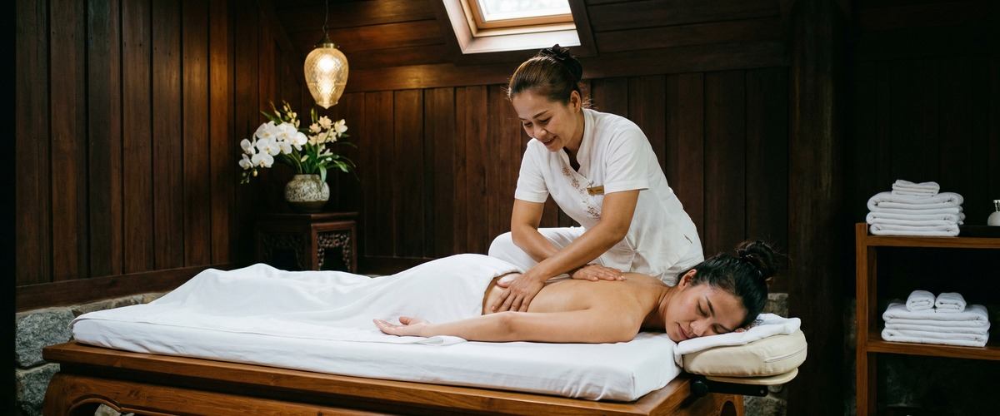
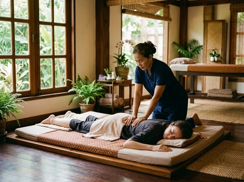

Stress is something most people in Glasgow know well.

The long commutes, the back-to-back meetings, the constant hum of the city. What many people don't realise is that the tension they carry home every evening is not just in their heads. It lives in their shoulders, their jaw, their lower back.
Regular massage is one of the most effective ways to address stress at both levels, physical and mental, and the science behind it is more compelling than you might expect.
When you're under pressure, your body releases cortisol. This hormone keeps you alert and ready to respond. In short bursts, that's useful.
But over weeks and months, high cortisol can disrupt sleep, weaken your immune system, and raise blood pressure. It also leaves muscles in a near-constant state of tension.

This is why chronic stress tends to show up in the body. The stiff neck you've had for three months. The headaches that arrive every Sunday evening.
These aren't separate problems — they're the same problem wearing different faces. If you want to understand what's happening inside you under stress, our article on cortisol and its effects on the body is worth a read.
Traditional Thai massage uses assisted stretching, acupressure, and work along the body's sen energy lines. Together, these techniques activate the part of your nervous system responsible for rest and recovery — the opposite of the stress response.
Research has found that massage lowers cortisol while raising serotonin and dopamine. These are the chemicals linked to calm, mood, and a sense of wellbeing.
One session can produce real, measurable changes. A regular practice builds on those effects over time. At Glasgow Thai Massage, our therapists work with the whole body — not just the area that hurts.
The stretches and rhythmic pressure used in traditional Thai massage can shift your nervous system into recovery mode within the first fifteen minutes of a session.
There's a real difference between a one-off massage when things get too much and a regular practice built into your routine. Both help. But regular sessions do something the occasional treat cannot: they train your nervous system to return to a calmer state more quickly.
Studies show that regular massage can lower blood pressure in people with hypertension. Better heart rate control — a key sign of how well your body handles stress — has been recorded after just ten minutes of therapeutic touch.
Come in once every few weeks and your body starts to hold less tension between sessions. The muscles don't lock up as fast. Sleep improves.
Recovery after a hard week gets shorter. You can book a session online and start building that practice at a pace that works for you.
It's easy to think of massage as something that works on muscles and leave it there. But stress is rarely just physical, and Thai massage works on the mental side too.
The Mayo Clinic notes that massage promotes a stronger sense of wellbeing. People report feeling less anxious, more clear-headed, and more able to cope after regular treatment.
This is exactly what clients at Glasgow Thai Massage tell us. The hour on the mat isn't just time away from their inbox — it's the hour that makes everything else feel more manageable.
For people dealing with anxiety, the link between massage and mental wellness is worth exploring further. The research is solid, and the experience of regular clients backs it up.
This depends on how stress shows up in your body. If you feel tension all over and are physically worn out, traditional Thai massage is often the most effective choice. Its full-body approach works the whole system, not just one area.
If tension is focused in specific muscles, a Thai oil massage may give deeper, more targeted relief. It uses warmed oils and therapeutic pressure, while still calming the nervous system.
For those whose stress comes from physical overexertion — athletes or anyone doing manual work — Thai sports massage supports recovery and stops physical strain from building into long-term tension.
The honest answer is that the best massage for stress is the one you'll come back to regularly. Maliwan and Jariya at Glasgow Thai Massage can help you work out which approach suits you best.
For stress management, most people do well with a session every two to four weeks. If you're going through a tough period at work or in life, weekly sessions can make a real difference to how your body holds tension.
The key is consistency. Even one session a month builds a lasting effect that a single occasional treatment simply can't match.
Yes. Multiple studies have measured drops in cortisol following massage therapy. Research from the Touch Research Institute at the University of Miami confirms that massage lowers cortisol while raising serotonin and dopamine.
The effects show up after a single session and grow stronger with regular treatment.
Both work well for stress relief. The right choice depends on your preference and how your body holds tension. Traditional Thai massage uses assisted stretching and acupressure to work through the whole body — many people find it deeply calming despite the more active technique.
Thai oil massage is slower and often suits those who want a gentler, more soothing experience. If you're not sure, it's worth trying both to see which one leaves you feeling more restored.
It can, yes. Chronic stress keeps cortisol high in the evenings when it should be falling, making it hard to wind down for sleep. By lowering cortisol and activating the body's rest response, regular massage can help restore a more natural sleep pattern over time.
Clients often report sleeping more soundly in the days after a session.
Traditional Thai massage is done fully clothed on a comfortable mat. There's no need to undress, and there's no awkward small talk. Your therapist works through a sequence of assisted stretches, joint movements, and acupressure that covers the whole body.
Most first-time clients are surprised by how relaxed they feel during the session — and noticeably lighter when they leave. You can read more about what to expect or book your first appointment online at a time that suits you.